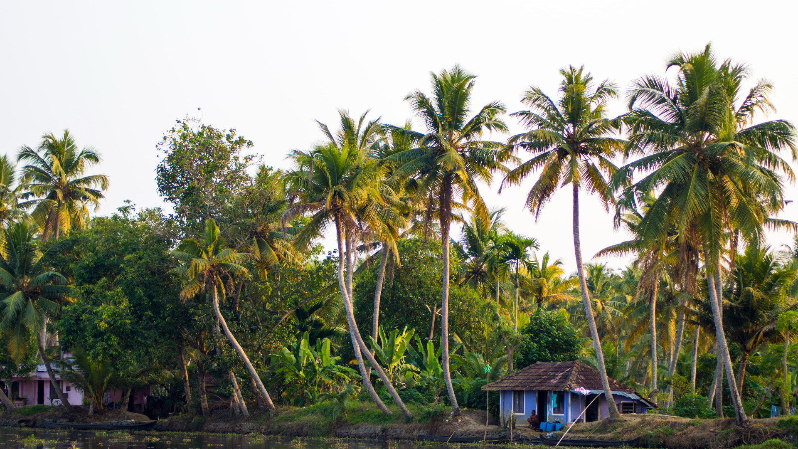
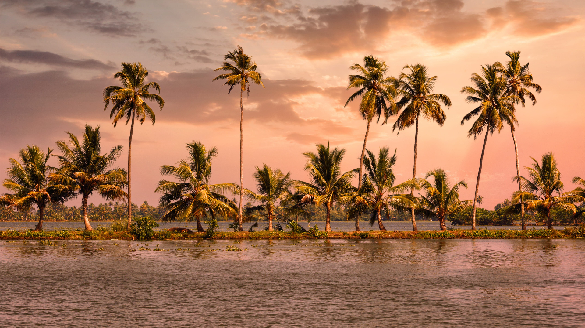

About Kerala
Kerala, often referred to as "God's Own Country," is a state located on the southwestern coast of India, known for its unique culture and heritage. The state's diverse demographics and rich cultural traditions have made it one of the most popular tourist destinations in the world. Kerala's culture is a blend of various influences, including the Dravidian culture of the indigenous people, the Aryan culture from the north, and the Arab and European cultures from the west. This blend has resulted in a distinct and vibrant culture that is celebrated through various festivals, art forms, and traditions. One of the most distinctive aspects of Kerala's culture is its traditional art forms, such as Kathakali, a highly stylized dance-drama that originated in the 17th century, and Mohiniyattam, a graceful dance form characterized by fluid movements and expressive gestures. These art forms are deeply rooted in the state's rich cultural heritage and are often performed during various festivals and events. Kerala's religious landscape is also diverse, with a significant presence of Hinduism, Christianity, and Islam. This religious diversity is reflected in the state's numerous temples, churches, and mosques, which are important cultural and architectural landmarks. Food is another essential aspect of Kerala's culture. The state is known for its unique cuisine, which is a blend of flavors from various regions. Some popular dishes include appam (a rice pancake), puttu (steamed rice cake), and biryani (a rice dish with meat or vegetables). In addition to its rich cultural heritage, Kerala is also known for its natural beauty, with its lush green landscapes, pristine beaches, and backwaters. These natural wonders provide a serene and tranquil atmosphere that attracts tourists from all over the world. In conclusion, Kerala's unique culture and heritage, combined with its diverse demographics and natural beauty, make it an ideal destination for tourists seeking a truly authentic and memorable experience.

Natural Beauty
Kerala's natural beauty is unparalleled. The serene backwaters of Alleppey and Kumarakom offer a peaceful retreat amidst lush coconut palms and quaint villages. The picturesque hill stations like Munnar and Wayanad provide breathtaking views of tea plantations and mist-covered valleys. And let's not forget the stunning beaches along the Arabian Sea coast, such as Kovalam and Varkala, perfect for relaxation and water sports. Some of the top natural beauty attractions in Kerala that attract tourists include: 1. **Edakkal Caves**: Located in Nenmeni, Kerala, these caves offer a unique experience with ancient petroglyphs and stunning rock formations. 2. **Eravikulam National Park**: Situated in the Kannan Devan Hills, this park is known for its diverse flora and fauna, including the endangered Nilgiri Tahr. 3. **Vazhachal Waterfalls**: A picturesque waterfall located in Athirapilly road, Pariyaram, offering a serene and beautiful natural setting. 4. **Attukad Waterfalls**: Found in Pallivasal, these waterfalls are surrounded by lush greenery and provide a tranquil escape into nature. 5. **Pothamedu View Point**: Offering panoramic views of the surrounding tea gardens and hills, this viewpoint is a perfect spot to admire Kerala's natural beauty. 6. **Periyar National Park**: Known for its wildlife sanctuary and scenic beauty, this park in Kerala is a haven for nature lovers and wildlife enthusiasts. 7. **Lakkidi View Point**: Located on the Kozhikode-Mysore-Kollegal Highway, this viewpoint offers breathtaking views of the Western Ghats and the surrounding landscape. 8. **Illikkal Kallu**: A stunning peak in Moonnilavu, Poonjar Vadakkekara, providing mesmerizing views of the surrounding valleys and landscapes. These attractions showcase Kerala's diverse natural beauty, from lush forests and waterfalls to scenic viewpoints and national parks, making it a paradise for nature lovers and tourists seeking an immersive experience in the lap of nature.
 Cultural Activities
Immerse yourself in the vibrant and diverse cultural tapestry of Kerala, a state renowned for its rich heritage and traditional art forms. Delve into the captivating world of Kathakali, a highly stylized dance-drama that narrates tales of ancient epics with intricate facial expressions and graceful movements. Experience the grace and elegance of Mohiniyattam, a classical dance form characterized by fluid movements and expressive gestures that embody the essence of femininity. Witness the mystical rituals of Theyyam, a vibrant folk art form where performers embody divine spirits through elaborate costumes and mesmerizing performances. Embark on a journey of rejuvenation as you indulge in Ayurvedic therapies, ancient healing practices that harmonize the mind, body, and soul. Let the healing touch of Ayurveda revitalize your senses and restore balance to your being, leaving you refreshed and invigorated. Explore Kerala's illustrious heritage by visiting historic temples, churches, and synagogues that stand as testaments to the state's religious diversity and architectural splendor. Marvel at the intricate craftsmanship and spiritual significance of these sacred sites, each offering a glimpse into Kerala's rich cultural tapestry and centuries-old traditions. Delight your taste buds with Kerala's delectable cuisine, renowned for its bold flavors and unique culinary traditions. savor the tantalizing blend of coconut, aromatic spices, and fresh seafood that define Kerala's gastronomic identity. From fragrant curries to crispy appams, each dish tells a story of culinary expertise passed down through generations, inviting you to savor every bite and experience the essence of Kerala's culinary heritage firsthand..